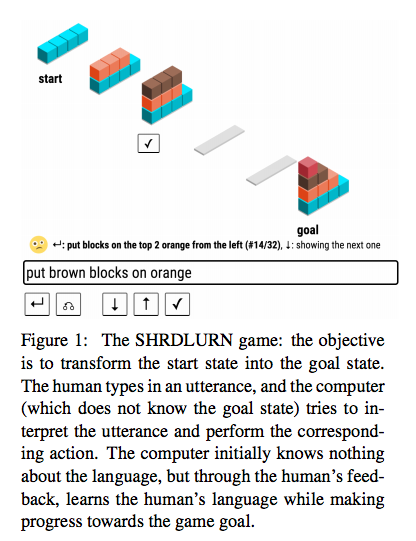

;; -- Mode: Markdown; Mode: Auto-Revert --
This doc contains notes on seven papers I found especially interesting. My full raw notes are here.
A Fast Unified Model for Parsing and Sentence Understanding
Samuel R. Bowman, Jon Gauthier, Abhinav Rastogi, Raghav Gupta, Christopher D. Manning and Christopher Potts
https://www.aclweb.org/anthology/P/P16/P16-1139.pdf
Abstract:
Tree-structured neural networks exploit valuable syntactic parse information as they interpret the meanings of sentences. However, they suffer from two key technical problems that make them slow and unwieldy for large-scale NLP tasks: they usually operate on parsed sentences and they do not directly support batched computation. We address these issues by introducing the Stack-augmented Parser-Interpreter Neural Network (SPINN), which combines parsing and interpretation within a single tree-sequence hybrid model by integrating tree-structured sentence interpretation into the linear sequential structure of a shift-reduce parser. Our model supports batched computation for a speedup of up to 25x over other tree-structured models, and its integrated parser can operate on unparsed data with little loss in accuracy. We evaluate it on the Stanford NLI entailment task and show that it significantly outperforms other sentence-encoding models.
sentence encoders in supervised learning
common sentence encoders: sum of word embeddings, RNNs, CNNs, TreeRNNs
TreeRNNs, how they work
pro: theoretically appealing, empirically competitive
con: relies on external parser, and slow -- don't support batch computation
conventional RNNs can be computed far more efficiently on GPUs due to batched computation
SPINN: Shift-reduce parser interpreter NN
equaivalent to TreeRNN, but way faster, and doesn't require external parser
key idea: mapping from binary tree to transition sequences (transition-based parsing)
sequence of shift/reduce operations
context-sensitive composition
the model sees a low-dimensional summary of the left context
this is produced by the "tracking LSTM"
inputs: head of stack, head of buffer
integrated parser: two-way transition classifier, emits shift or reduce, informed by tracking LSTM
implementing the stack -- how to do it in NN?
naive: simulate with fixed-size array
requires lots of inefficient copying
thinner stack: store only head of stack [huh? are we actually losing information? don't get it]
experiments on SNLI corpus
using SPINN for SNLI
error analysis: negation
future work
add attention model
reinforcement learning for parsing actions => learn syntax from a semantic task
Code is on GitHub! https://github.com/stanfordnlp/spinn
WikiReading: A Novel Large-scale Language Understanding Task over Wikipedia
Daniel Hewlett, Alexandre Lacoste, Llion Jones, Illia Polosukhin, Andrew Fandrianto, Jay Han, Matthew Kelcey and David Berthelot
http://www.aclweb.org/anthology/P/P16/P16-1145.pdf
Abstract:
We present WIKIREADING, a large-scale natural language understanding task and publicly-available dataset with 18 million instances. The task is to predict textual values from the structured knowledge base Wikidata by reading the text of the corresponding Wikipedia articles. The task contains a rich variety of challenging classification and extraction sub-tasks, making it well-suited for end-to-end models such as deep neural networks (DNNs). We compare various state-of-the-art DNN-based architectures for document classification, information extraction, and question answering. We find that models supporting a rich answer space, such as word or character sequences, perform best. Our best-performing model, a word-level sequence-to-sequence model with a mechanism to copy out-of-vocabulary words, obtains an accuracy of 71.8%.
a dataset for evaluating deep learning models for QA
factoid-style QA as end-to-end optimization
want to evaluate in a shared way
models like this benefit from very large datasets
there is no perfect dataset
example
wiki page for barack obama
wikidata entry
wikidata: crowdsourced KB, similar to Freebase, but aligned to wikipedia
properties and values
each task instance
raw text from wikipedia article
property is question
value is answer
two kinds: categorical properties, limited set of values, a classification task
e.g. gender, country of origin
evidence is often distributed over the text, like a text cat problem
also relational properties: dates, names, places
evidence is extracted from a single point in text, like an IE problem
dataset statistics
18.5M instances
900 unique properties
perhaps less varied than other datasets
but much larger
scoring metric
mean F1: compute F1 per problem, then average over problems
this is a way of giving partial credit for set-based answers
approaches to QA -- what works best?
tried a variety of approaches, incl. recent DNN work, also textcat
eval setup in TensorFlow
fixed hyperparameters like vocab size
approaches
classification -- for textcat problems
labeling / pointing -- for extraction problems -- label each word in doc as part of answer or not
seq2seq -- encode doc and question, decode the answer as seq of words or chars
results for a range of models
best results from "attentive reader" by Hermann et al. 2015
broadly, models with RNNs and attention do best
seq2seq models
rare word copying -- similar to MT, Luong et al. 2015
word-level vs. char level: char-level permits OOV generation, but seqs are very long
overall, seq2seq models perform best
handles categorical tasks as well as classifiers
handles relational tasks as well as labelers
and actually uses fewer parameters
future work
still lots of headroom on performance
char-level seq2seq especially promising
multilingual: dataset generation could easily be done in other languages
really nice work!
exceptionally clear presentation!
Dataset available online, 18M instances: https://github.com/dmorr-google/wiki-reading
A Thorough Examination of the CNN/Daily Mail Reading Comprehension Task
Danqi Chen, Jason Bolton and Christopher D. Manning
https://www.aclweb.org/anthology/P/P16/P16-1223.pdf
Abstract:
Enabling a computer to understand a document so that it can answer comprehension questions is a central, yet unsolved goal of NLP. A key factor impeding its solution by machine learned systems is the limited availability of human-annotated data. Hermann et al. (2015) seek to solve this problem by creating over a million training examples by pairing CNN and Daily Mail news articles with their summarized bullet points, and show that a neural network can then be trained to give good performance on this task. In this paper, we conduct a thorough examination of this new reading comprehension task. Our primary aim is to understand what depth of language understanding is required to do well on this task. We approach this from one side by doing a careful hand-analysis of a small subset of the problems and from the other by showing that simple, carefully designed systems can obtain accuracies of 72.4% and 75.8% on these two datasets, exceeding current state-of-the-art results by over 5% and approaching what we believe is the ceiling for performance on this task.
reading comprehension: passage (P) + question (Q) => answer (A)
data is a bottleneck
existing datasets very small
last year, DeepMind (Hermann et al. 2015) created a very large dataset from CNN/Daily Mail
~1M examples
this paper
lower bound: simple systems work surprisingly well on this dataset
upper bound: manual analysis indicates that we are almost done -- this task is not that hard!
system 1: simple entity-centric classifier with manually-engineered features
for each entity, build vector of very simple features
system 2: end-to-end NN: bi-RNN w/ attention -- nowadays a pretty standard architecture
results
baselines: Hermann et al. 2015 (DeepMind), Hill et al. 2016 (Facebook)
our simple classifier matches best previous results
our NN does even better
ensemble of the two does even better! 77% accuracy
why do we get much better results than DeepMind's attentive reader?
bilinear attention
remove a redundant layer before prediction
predict among entities only, not all words
upper bound
do ablation analysis of our simple classifier
most important feature is n-gram match, followed by frequency
manual breakdown of examples into six categories
exact match, paraphrasing, partial clue, multiple sentences, coreference error, ambiguous/hard
the last two categories are going to be very hard to get, but constitute 25% of examples
we're already at 77% performance -- already close to ceiling
takeaways
simple models sometimes just work
NNs great for learning semantic matches
dataset is large, but still noisy, not hard enough for reasoning and inference
more datasets coming: WikiReading, LAMBADA, SQuAD
it's an exciting time for reading comprehension!
Code is on GitHub!
https://github.com/danqi/rc-cnn-dailymail
Learning Language Games through Interaction
Sida I. Wang, Percy Liang and Christopher D. Manning
https://www.aclweb.org/anthology/P/P16/P16-1224.pdf
Abstract:
We introduce a new language learning setting relevant to building adaptive natural language interfaces. It is inspired by Wittgenstein’s language games: a human wishes to accomplish some task (e.g., achieving a certain configuration of blocks), but can only communicate with a computer, who performs the actual actions (e.g., removing all red blocks). The computer initially knows nothing about language and therefore must learn it from scratch through interaction, while the human adapts to the computer’s capabilities. We created a game called SHRDLURN in a blocks world and collected interactions from 100 people playing it. First, we analyze the humans’ strategies, showing that using compositionality and avoiding synonyms correlates positively with task performance. Second, we compare computer strategies, showing that modeling pragmatics on a semantic parsing model accelerates learning for more strategic players.
Code, data, demo online:
http://shrdlurn.sidaw.xyz
natural language interfaces: SIri, Cortana, Google Now, Alexa
NLI wishlist
interactive learning -- feedback from users
adapt to users
handle special domains and low resource languages
language game -- Wittgenstein
language derives its meaning from use
interactive language game
human player has goal, cannot perform actions
computer player does not know goal, can performa actions, does not understand the language
SHRDLURN
blocks world
starting configuration, goal
"remove red"
computer responds with ordered list of actions
human provides feedback by choosing correct action
"remove right red"
built a nice UI for this

computer: semantic parsing
actions as logical forms
fairly standard approach to semantic parsing
log-linear model, L1 penalty, AdaGrad
very generic features: uni-, bi-, skip-grams; tree-grams, cross-product features
humans: 100 MTurkers
10K utterances (6 hours)
minimal instructions
can use any language
examples
some invented their own shortahnd language
some were inconsistent, performed poorly
most used English, but one used Polish, one used RPN!
became more consistent, more concise over time
learning works fairly well, esp. for top players
pragmatics
say you teach the computer the meaning of one word
if you then use a different word, pragmatics suggests that you mean a different thing
otherwise you should have just used the same word
humans do this without thinking
reminiscent of work from Will Monroe and Chris Potts
but adding pragmatics had relatively little impact on quantitative results overall
however that includes crappy players
if you focus only on the top players, it does help a lot!
takeaways
more capable and responsive to users
feedback mechanism => less likely to be stuck
good for low-resource languages and new domains
learn from the actual distribution
code, experiments, demo is online: http://shrdlurn.sidaw.xyz
The Enemy in Your Own Camp: How Well Can We Detect Statistically-Generated Fake Reviews -- An Adversarial Study
Dirk Hovy
http://www.aclweb.org/anthology/P/P16/P16-2057.pdf
Abstract:
Online reviews are a growing market, but it is struggling with fake reviews. They undermine both the value of reviews to the user, and their trust in the review sites. However, fake positive reviews can boost a business, and so a small industry producing fake reviews has developed. The two sides are facing an arms race that involves more and more natural language processing (NLP). So far, NLP has been used mostly for detection, and works well on human-generated reviews. But what happens if NLP techniques are used to generate fake reviews as well? We investigate the question in an adversarial setup, by assessing the detectability of different fake-review generation strategies. We use generative models to produce reviews based on meta-information, and evaluate their effectiveness against deceptiondetection models and human judges. We find that meta-information helps detection, but that NLP-generated reviews conditioned on such information are also much harder to detect than conventional ones.
Somebody stole Dirk's laptop, so he had to present without slides! Kicking it old-school! Heroic!
lots of reviews -- Yelp, Trip Advisor
a multi-billion dollar industry
problem of fake reviews
companies are using NLP to identify fake reviews
we're actually able to do this pretty well
fake reviewers are lazy
too many adjectives
can use a logistic regression model pretty well
if we can detect fake reviews using NLP, can we make fake reviews using NLP
7-gram Markov model works really well
now, can we detect those?
turns out that fake detectors also use metadata extensively -- age, gender
so to make good fakes, you have to fake the metadata too
a generative model for that
adversarial setup
how well can NLP tools fool NLP tools
if you don't generate fake metadata, the LR model can discriminate the fakes
but if you do, it can't distinguish the fakes!
how well do humans do? terrible -- worse than logistic regression models
so this is how you can get rich quick
Deep multi-task learning with low level tasks supervised at lower layers
Anders Søgaard and Yoav Goldberg
http://www.aclweb.org/anthology/P/P16/P16-2038.pdf
Abstract:
In all previous work on deep multi-task learning we are aware of, all task supervisions are on the same (outermost) layer. We present a multi-task learning architecture with deep bi-directional RNNs, where different tasks supervision can happen at different layers. We present experiments in syntactic chunking and CCG supertagging, coupled with the additional task of POS-tagging. We show that it is consistently better to have POS supervision at the innermost rather than the outermost layer. We argue that this is because “low-level” tasks are better kept at the lower layers, enabling the higher-level tasks to make use of the shared representation of the lower-level tasks. Finally, we also show how this architecture can be used for domain adaptation.
bi-LSTM models
input layer: pretrained embeddings
output layers: syntactic chunking, or POS tagging (multi-task learning)
during training, we randomly sample from the two datasets, then randomly sample an example
three perspectives on multi-task learning
1 semi-supervised learning
auxiliary data is enriched unlabeled data
2 representation learning
auxiliary data is used to learn representations that are useful for target task
3 regularization
auxiliary data is an adaptive prior
inspiration: face recognition, preogressively more complex repns at higher layers
idea: use POS data to supervise at lower layers, not top layer
instead of supervising with either POS or syntax at top output layer
experiments
baseline vs. vanilla MTL vs cascaded
yes, cascaded helps!
more experiments
domain adaptation
assume we have POS-annotated data for target domain, but not SYN-annotated data
here the effect is even more pronounced
MTL as regularization
is supervision at lower layers more prone to overfitting?
no, in fact it is less vulnerable to overfitting than baseline or vanilla MTL
take home messages
MTL is cool
NNs provide a convenient framework for MTL
but think about your architectures
Finding Non-Arbitrary Form-Meaning Systematicity Using String-Metric Learning for Kernel Regression
E. Dario Gutierrez, Roger Levy and Benjamin Bergen
https://aclweb.org/anthology/P/P16/P16-1225.pdf
Abstract:
Arbitrariness of the sign — the notion that the forms of words are unrelated to their meanings — is an underlying assumption of many linguistic theories. Two lines of research have recently challenged this assumption, but they produce differing characterizations of non-arbitrariness in language. Behavioral and corpus studies have confirmed the validity of localized form-meaning patterns manifested in limited subsets of the lexicon. Meanwhile, global (lexicon-wide) statistical analyses instead find diffuse form-meaning systematicity across the lexicon as a whole. We bridge the gap with an approach that can detect both local and global form-meaning systematicity in language. In the kernel regression formulation we introduce, form-meaning relationships can be used to predict words’ distributional semantic vectors from their forms. Furthermore, we introduce a novel metric learning algorithm that can learn weighted edit distances that minimize kernel regression error. Our results suggest that the English lexicon exhibits far more global form-meaning systematicity than previously discovered, and that much of this systematicity is focused in localized form-meaning patterns.
arbitrariness of the sign
assumption: the relationship between forms and meanings is arbitrary
but is it so?
systematicity in the lexicon
sub-morphemic form-mean mappings
buzz, clink, clank
gl: gleam, glow, glimmer, glint, glance, glare, glisten, glitter, ...
sn: snark, sneeze, sniff, snicker, ...
sl: slide, slick, sled
identified intuitively
confirmed empirically
but relies on testing specific hypotheses
can we automate this?
can we study systematicity globally?
maybe these are just statistically flukes?
how broadly distributed over the lexicon?
let's use distributional semantics to study systematicity over the whole lexicon
Shillock & Kirby 2001
over all pairs of words, measure correlation between form distances and meaning distances
the correlation is small in magnitude, but highly statistically significant
Monaghan et al. 2014 -- found no difference from chance
how to reconcile?
maybe previous work is not sensitive enough
only capture linear relationships
treat all types of edits as equivalent
can we learn a model from string space into semantic space?
SMLKR model
i.e. try to predict meaning from form?
kernel regression -- non-parametric regression -- locally smooth
metric learning for kernel regression
parametrization of edit distance function space
optimization
experiments
40,000 words, most frequent in BNC corpus
found highly statistically significant structure
most systematic: gurgle, tingle, hoop, chink, swirl, ladle, ...
behavioral evaluation
asked humans how well form corresponds to meaning
judgments correlate with predictions of SMLKR model
systematicity is significantly localized